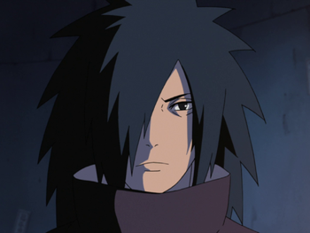

- Jaiotze-data :
- 1900ko abenduaren 24an
- Sexua:
- Gizonezkoa
- Adina:
- 121urte
- Altuera:
- 1,78m
- Pisua:
- 78kg
- Herria:
- Konoha
- Herrialdea:
- Susko herrialdea
- Pertsonaia:
- Kontrariorik indartsuenetako bat da
- Habilitatea:
- Rinne Sharingan, Sharingan, Mangekyō Sharingan Eterno, Rinnegan, Madera, Tormenta, absorcion de chakra, Regeneracion, eta Flotar
- Gauza interesgarriak:
- Nahiz eta hilda egon Edo Tenseiarekin ekartzen dute bizitzara 4.gerra irabazi eta bere planak betetzeko, eta lortu egiten du baina alako batean Zetsu beltz batek traizionatzen du eta hil egiten da atzera
- Historia:
- Madara, bere anaia gazteenarekin, Izuna Uchixarekin, etengabeko lehian hazi zen. Biak, bere klaneko kiderik talentudunenak bezala ezagutzen ziren. Bere lehiak, Mangekyō Sharingan lortzera eraman zituen, eta, honela, Uchiha klanaren kontrola hartzeko gai izan ziren, Klan honetan, Madarak, lider bezala jokatzen zuelarik. Bere klanaren estandarrentzat ere, Madarako chakra oso indartsua izan zen. Gerrak zehaztutako garai batean, gudua izan zen egin zuen guztia, eta oraindik indartsuagoa izan nahi zuen. Bere buruzagitzapean, klanak aurkitzen zuten guztia konkistatzen zuen. Senju klanaren aurkako borroka batean. Mangekyō Sharinganek, bere erabileragatik ondorio asko zituen, horietako bat, ikusmena galtzea zen, Madarak, bere Mangekyō Sharingan aktiboki mantentzen zuen denbora guztian, eta, emaitza bezala, ikusmena galdu eta bere anaia hiltzez zaurituaren begiak transplantatu zituen, honela, bere ikusmena birgaitu eta betiko Mangekyō Sharingan lortzeko.